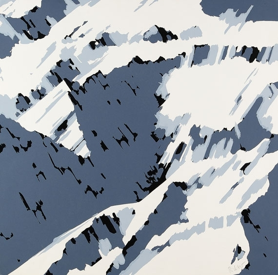
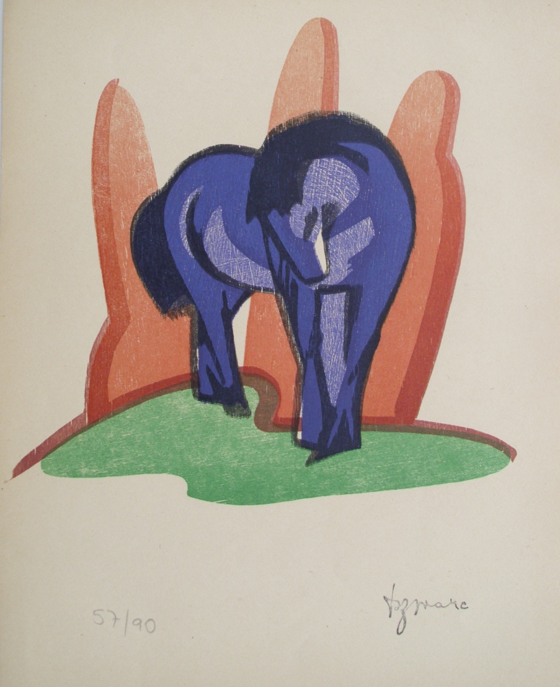
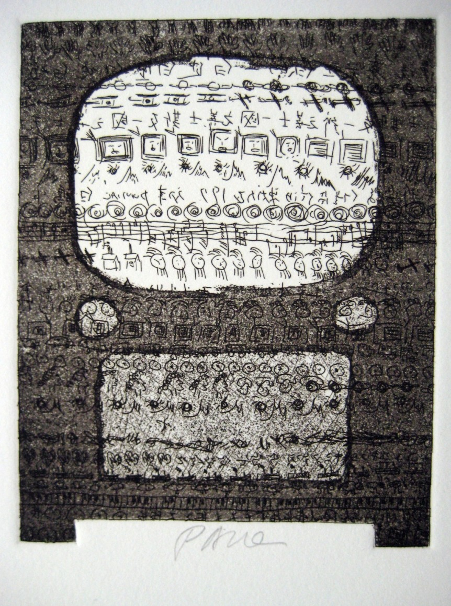
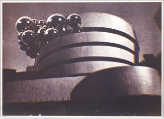
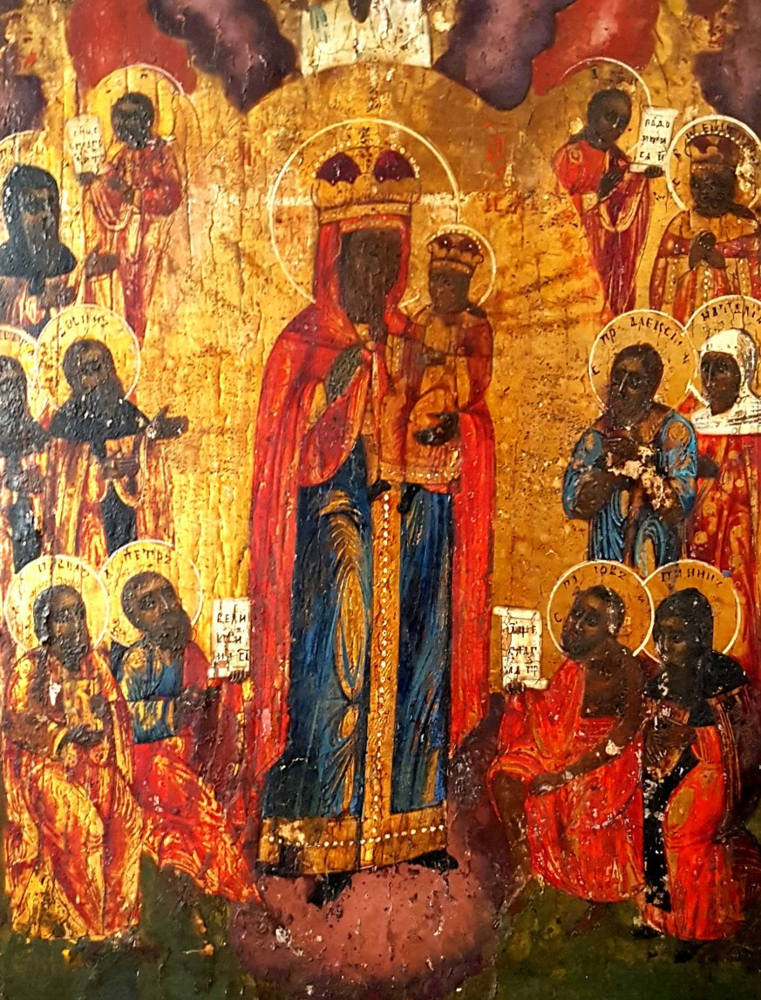

Art Gstaad © · Aspekte der Sammlung
A collection is a conversation. Fifteen questions, and the works that try to answer them.
Question 08
Is gray a color?

Gerhard Richter answers
Question 10
Is surrealism reality?

Meret Oppenheim answers
Question 13
Does art make me an individual?

Andy Warhol answers
Question 09
Is good art simple? Or how concrete must art be?

Jasper Johns answers
Question 05
Does art play with sexism?
Allen Jones answers
Question 11
Is Expressionism really crazy?

Franz Marc answers
Question 03
How crazy should art be?

Nam June Paik answers
Question 02
Does art move us? Or does it move itself?

Pol Bury answers
Question 15
Is old art still up to date?

An icon answers

September 2026 · Gsteig b. Gstaad
Can art answer? — come and see for yourself.
Click a page or use arrow keys. The full flipbook edition of the book will be published here.